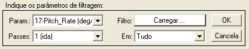
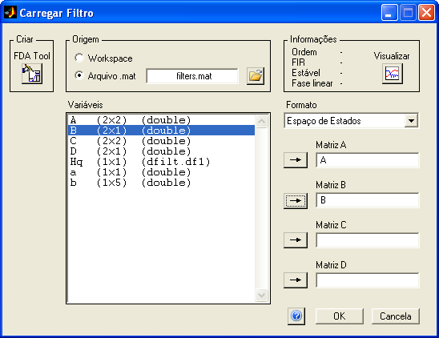
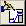
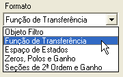
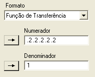
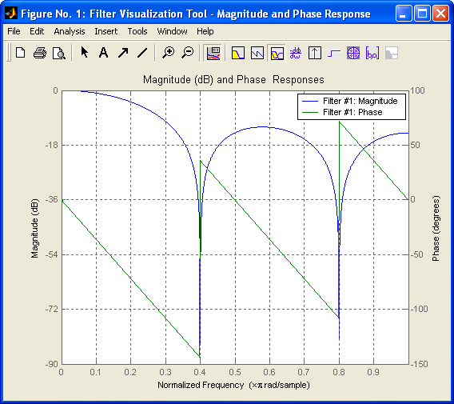
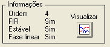
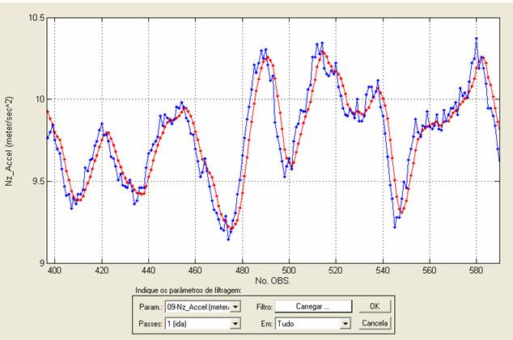
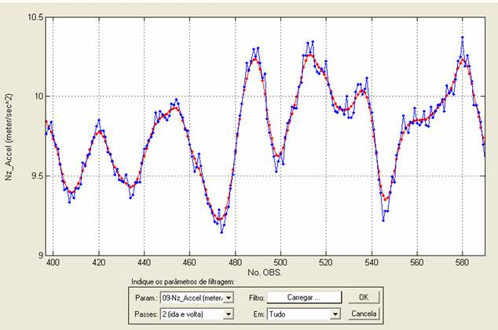
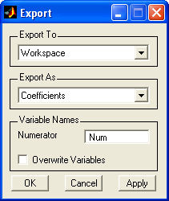

|
Menu Funções |
|
Filtragem
de Sinal
Essa ferramenta
permite a importação e aplicação de filtros
digitais sobre os parâmetros.
Clique em
“Funções ► Filtragem e reamostragem ... ►
Filtragem de sinal”.
A Caixa de
Diálogo solicitará que o usuário indique os
parâmetros para filtragem:

● No campo
“Param”, indique o parâmetro que deseja
filtrar. O plote
principal se atualizará conforme a
seleção.
● No campo
“Passes”, indique o número de passes que
deseja realizar sobre o parâmetro. As opções são:
|
Opção |
Descrição |
|
1 (ida) |
Aplicação
normal do filtro sobre o parâmetro. |
|
2 (ida e volta) |
O filtro é
aplicado uma vez no sentido normal e outra vez no sentido inverso do
parâmetro, de forma a zerar o erro de fase. Esse processo duplica a
ordem do filtro. |
● No campo
“Em”, indique em que parte do parâmetro
deseja aplicar o filtro. As opções são:
|
Opção |
Descrição |
|
Tudo |
O filtro é
aplicado sobre todo o parâmetro. |
|
Intervalo |
O filtro é
aplicado apenas sobre o intervalo selecionado, definido pelos limites
do gráfico. |
● No campo
“Filtro”, clique no botão para
abrir a janela de
definição do filtro:

A janela “Carregar Filtro” permite carregar e visualizar diversos tipos de filtros a partir do Workspace ou de um arquivo mat.
A criação do filtro pode ser
feita pela ferramenta “Filter
Design and Analysis” do
MATLAB, que pode ser acessada pelo botão 
● No campo
“Origem”, selecione o local de onde o
filtro será carregado (Workspace
ou Arquivo .mat). Clique no
botão para
localizar e abrir um arquivo.
As variáveis
contidas no Workspace
ou do arquivo aberto
são apresentadas na janela “Variáveis”, com nome, dimensões e tipo.
● No campo
“Formato”, selecione o tipo do filtro
desejado:

O R_DAT
trabalha com os seguintes tipos de filtro:
|
Tipo |
Variáveis |
Nomenclatura
Típica |
Formato |
|
Objeto Filtro |
Objeto Qfilt |
Hq |
Estrutura |
|
Função de
Transferência |
Numerador Denominador |
num, a den, b |
Vetor linha Vetor linha |
|
Espaço de
Estados |
Matrizes de
estado |
A B C D |
Matriz N × N Vetor N × 1 Vetor 1 ×
N Escalar |
|
Zeros, Pólos e
Ganho |
Zeros Pólos Ganho |
z p k |
Vetor coluna Vetor coluna Escalar |
|
Seções de 2ª Ordem e Ganho |
Seções de 2ª Ordem Ganho |
sos g |
Matriz N × 6 Escalar |
|
Média Móvel |
Ordem |
n |
Escalar |
Os campos de
entrada de variáveis serão habilitados e
renomeados conforme a seleção do tipo de filtro.
Para entrar uma
variável, selecione-a na janela “Variáveis” e
clique no botão correspondente.
Também é possível digitar o
nome da variável diretamente nos campos de entrada ou ainda digitar os
valores
numéricos diretamente, como no exemplo abaixo (função de transferência de um filtro de média móvel de
ordem 5):

|
Nota: No caso de
sistemas com mais de uma entrada ou saída, apenas a primeira entrada e
saída serão consideradas. |
Depois de
selecionar o tipo de filtro e inserir as variáveis
correspondentes, é possível visualizar graficamente as características
do
filtro, como resposta em frequência (magnitude e fase), resposta a inputs padrão, LGR e outras informações,
usando o Filter Visualization
Tool do
MATLAB. Para chamar essa ferramenta, clique no
botão .

Depois de
visualizar o filtro, serão apresentadas no campo “Informações”
algumas informações básicas sobre o filtro definido:
- Ordem
do
filtro;
- Se o filtro é do
tipo “Finite Impulse
Response”;
- Se o filtro é estável;
e
- Se o filtro
apresenta fase
linear.

Após definir o
filtro, clique “OK” para confirmar, ou clique
“Cancela” para cancelar o carregamento. As definições serão lembradas
caso a
janela de definição de filtro seja chamada novamente.
Se o filtro for
carregado, será apresentado um plote
temporário comparando o resultado da filtragem com o
parâmetro original, como exemplificado nas figuras a seguir:
Exibição
temporária de uma filtragem simples (com um passe):

Exibição
temporária de uma filtragem com dois passes (ida e volta), sem
erro de fase:

Ao pressionar
“OK”, será solicitado o nome do novo
parâmetro:

Após definir o
nome e pressionar “OK”, o novo parâmetro com os
dados filtrados será acrescentado à penúltima posição das matrizes de
trabalho
(antes de “No.OBS.”).
MATLAB
Filter Design and Analysis Tool
Essa ferramenta
original do MATLAB permite a criação e
análise de diversos tipos de filtros digitais que podem ser usados pelo
R_DAT
para filtragem de parâmetros.
Clique em
“Funções ► Filtragem e reamostragem ... ►
MATLAB Filter Design
Tool”.
Após definir o
filtro desejado, clique em “File ► Export ...”
e exporte o filtro ou os coeficientes para o Workspace ou para um arquivo
mat.

Depois de
exportar o filtro, carregue-o no R_DAT usando o
botão “Carregar” na função “Filtragem de sinal”.
Para mais
informações sobre a ferramenta FDATool, clique aqui.
|
|
Composição
de parâmetros |
Interpolar
pontos selecionados |
|